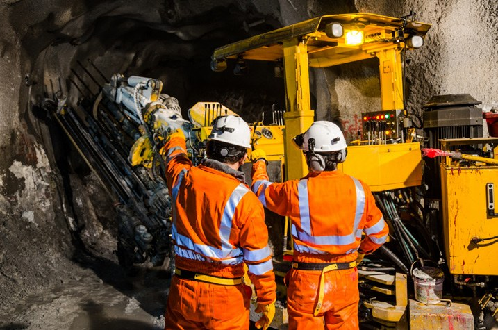

Scene 01 ｜ Construction Site
建設・工事現場
騒音と粉塵、広い敷地。親機は「現場を見渡せる高所」に据え置き、作業員はヘルメット装着マイクで。
📄 このシーンの設置ガイド（PDF）親機の設置場所
- 現場事務所・詰所の窓際や外壁、仮設足場の上段など、作業エリア全体を見渡せる高所（1〜2m以上）に親機を据え置き、USB給電で運用します。
- 分電盤・溶接機・大電流ケーブルの近くは避けます。地上と地下（坑内）をつなぐ場合は、親機を坑口付近の見通しの良い位置に置くと安定します。
- 複数工区がある現場は、工区ごとに親機を分けて設置（同一エリア最大6グループ）。親機同士は離して置きます。
構成例
| 親機（据え置き） | 1台 | 現場事務所・詰所に設置。通話には使わず固定運用 |
|---|---|---|
| 子機 | 4〜8台 | 現場監督・職長・各作業員（1グループ最大8人） |
| 推奨マイク | SSH-1123 | ヘルメット装着マイク＋防滴イヤスピーカー SSE-1040 |
| 高騒音エリア | SSI-1028 | はつり・重機近傍はスロートマイク |
運用のコツ
- ヘルメット装着マイク SSH-1123 は〜90dB、スロートマイク SSI-1028 は95〜100dB以上の騒音に対応。エリアの騒音レベルでマイクを選びます。
- IPX5防水・MIL-STD-810H準拠。雨天・粉塵環境でもそのまま使えますが、マイク風防は汚れたら交換してください。
- 1日8時間を超える運用や子機5台以上では、親機は必ず給電しながら使用します。
推奨マイク・ヘッドセット

SSH-1123
ヘルメット装着マイク
対応騒音 〜90dB
接話型ノイズキャンセル。ヘルメットに装着。防滴イヤスピーカー SSE-1040 と組み合わせ可。

SSI-1028
スロートマイク
対応騒音 95〜100dB以上
喉の振動を拾う咽喉マイク。ラインナップ中で最も高騒音向け。

SSP-1130
タイピンマイク
対応騒音 〜80dB
胸元に装着するコンパクトなタイピン型。PTTボタン付き。